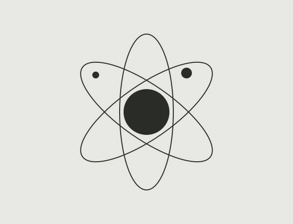
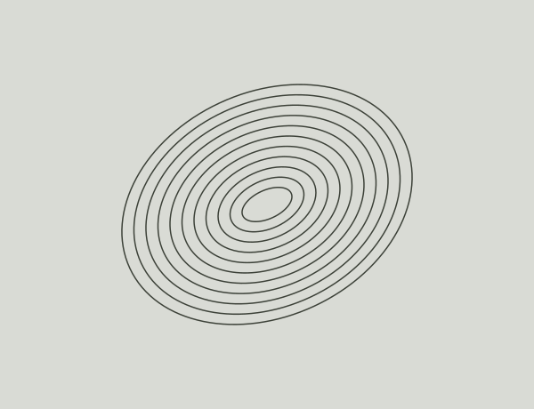

Orbital study001
Words, images, buttons.
They all look better on a ball.
Roll through the page and collect what you touch. Stop whenever you want to put it all back.

Loose type
Aa
Letters with somewhere to go.

Notes from the page
This headline. That image. The little button you were about to click. A website has plenty of things worth collecting.
Download the extension to play over a website you already have open. It runs when you start it, on that tab.
Download extensionFree · Open source · Manual installation
Keep the page-katamari folder somewhere permanent.
chrome://extensionsPaste this address into a new tab and turn on Developer mode.
Click Load unpacked and select the unzipped page-katamari folder.
Pin Page Katamari from Chrome’s Extensions menu. Click its icon, then Start collecting. Use the on-page × or Esc to restore the page.
This is an experimental desktop Chrome extension. It cannot run on protected browser pages, the Chrome Web Store or the built-in PDF viewer. Embedded frames, shadow DOM and complex live applications may have limits. Reload the tab if a site does not recover as expected.
The extension asks for access to the active tab when you invoke it. It has no account, analytics or upload service. Images and other assets already on a page may still be loaded by the browser. This public demo contains only local project assets.
On a phone, you can drag to steer in this demo. Installing the extension requires desktop Chrome.